Web Interface¶
The Kyber Control System features a powerful web-based interface for system configuration. This interface is designed to be both intuitive and responsive, enabling you to configure your system from any supported web browser.

Interface Overview
- The top menu bar provides quick access to all major system functions
- Interface elements automatically adjust based on your configuration settings
- Clean, modern design for easy navigation and control
Browser Support¶
The web interface is officially tested and supported on these browsers:
- Google Chrome
- Microsoft Edge
- Safari
Mobile Device Tips
When accessing the interface on mobile devices:
-
Orientation
- Use landscape mode for better control
- Enable screen rotation lock for stability
-
Device Choice
- Tablets are recommended for complex operations
- Larger screens provide better access to all controls
Important: Save Your Changes
Always click the "Save to Memory" button after modifying settings. Changes will be lost if you navigate away without saving.
General Configuration¶
The General page is your starting point for configuring the Kyber Controller. Begin here to set up your system's basic features and functionality.

Features¶
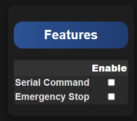
-
Serial Command
- Enables command transmission through the "Marcduino" serial port on the Kyber Board
- Compatible with any device supporting serial communication
- Used for precise device control and automation
-
Human Cyborg Relations (HCR)
- Activates the HCR configuration menu in the General page
- Uses the same "Marcduino" serial port for communication
- Enables advanced HCR features and controls
RC Channel Configuration¶

Basic Controls¶
-
Button PAD
- Assign RC channel for External Button PAD or Kyberpad
- Controls main interaction interface
-
PAD Toggle
- Set RC channel to switch between PAD
- Uses a 2-position toggle switch to activate PAD 2
- Uses a 3-position toggle switch to activate PAD 3
- Enables quick switching between control sets
-
Volume Control
- Designate RC channel for audio volume
- Compatible with slider or potentiometer controls
- Provides realtime volume adjustment
Advanced Controls¶
-
Button Pairs (1-2, 3-4, 5-6)
- Each pair requires one RC channel
- Uses 3-position toggle switches
- Functions as two separate buttons per channel
- See "Buttons RC section" for detailed setup
-
Random Events
- Assign RC channel for random sound/event control
- Uses 3-position toggle switch
- Controls automatic event triggering
- See "Random Section" for configuration details
Maestro Configuration¶
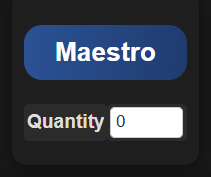
- Quantity Setting
- Specify the number of Maestro controllers in use
- Supports up to 2 Maestro controllers
- Each controller can supports up to 24 channels
- New Maestro menu appears after saving
Maestro Control Settings¶
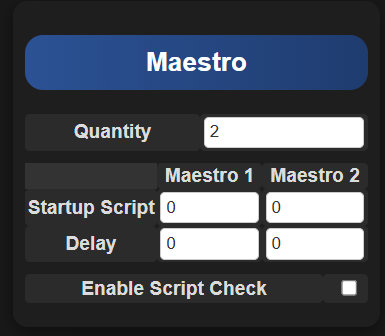
-
Startup Script
- Select script to run after Kyber boot
- Automates initial positioning
- Customizable per Maestro
-
Startup Delay
- Set delay before script execution
- Allows system stabilization
- Time in milliseconds
Script Management¶
- Enable Script Check
- Prevents multiple script overlap
- When enabled: New scripts won't start if one is running
- Ensures smooth motion sequences
- Prevents conflicting movements
Sound Configuration¶
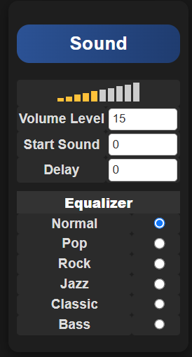 Manual volume control when no RC channel is assigned
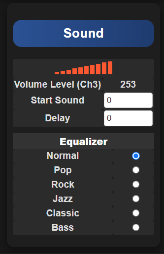 Dynamic volume control with RC channel assignment
Volume Control Options¶
-
Manual Control
- Available when no RC channel is assigned
- Adjustable range: 0-30
-
RC Channel Control
- Real-time volume adjustment via RC
- Uses slider/potentiometer input
- Dynamic level display
-
Startup Sound
- Plays after boot sequence completion
- Customizable sound selection
- Confirms system readiness
-
Start Delay
- Adjustable delay before startup sound
- Allows system initialization
- Prevents audio cutoff
Audio Processing¶
- Equalizer Settings
- Built-in DFPlayer feature
- Preset audio profiles
- Note: Settings are fixed in hardware
Human Cyborg Relations (HCR) Configuration¶
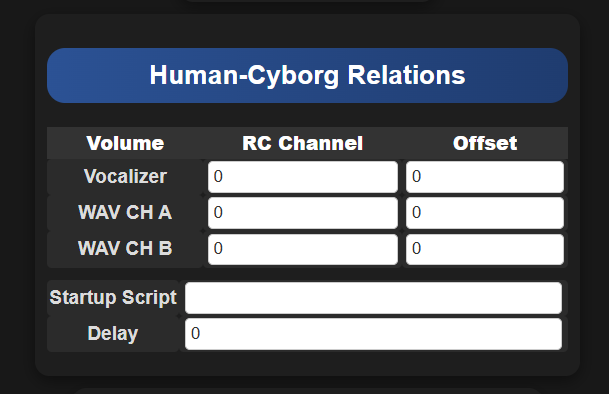
-
RC Channel Assignment
- Controls HCR volume levels
- Single channel can control all three outputs
- Independent volume control option available
-
Channel Offset
- Fine-tune volume balance between HCR channels
- Compensates for speaker differences
- Maintains consistent audio levels
-
Startup Script
- Automated startup command sequence
- Initializes HCR systems
-
Startup Delay
- Adjustable startup delay
- Ensures proper system initialization
- Prevents audio conflicts
System Registration¶
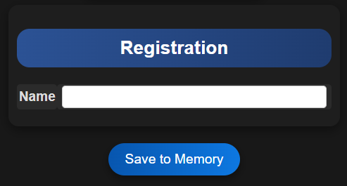
- Name
- Enter your droid's name or personal identifier
- Appears in the web interface footer
- Helps identify specific systems in multi-unit gattering
RC Settings Configuration¶
The RC Settings page is the central hub for configuring your radio control channels. The interface automatically adapts based on your General page configuration.
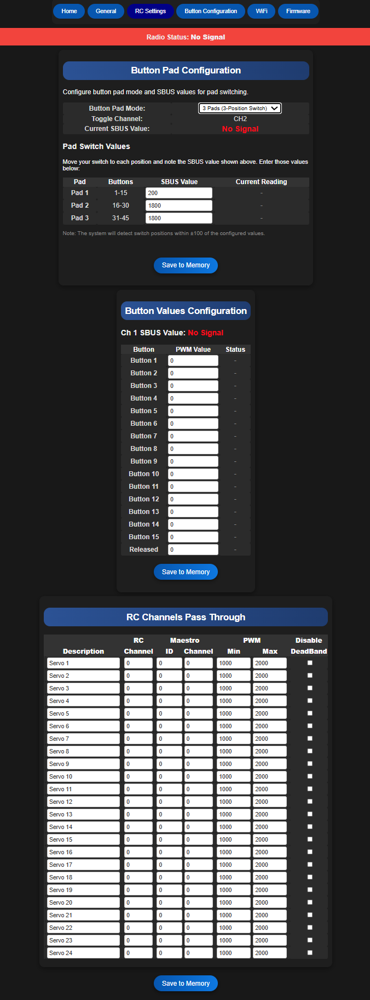
Connection Status¶
Connection Error
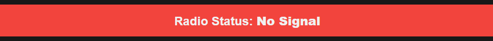
If you see this message:
- Check SBUS connection between receiver and Kyber
- Verify receiver configuration
- Ensure proper wiring connections
- Confirm receiver power supply
Connection Active
Proper SBUS connection detected:
- Supports both SBUS16 and SBUS24 protocols
- Real-time channel monitoring
- Full functionality available
Button PAD Configuration¶
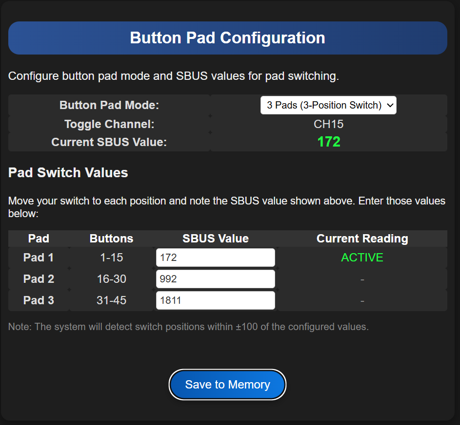
-
Button PAD Mode
- Choose between 2 or 3-position configuration
- 2-position: Enables two PAD configurations
- 3-position: Enables three distinct PADs
-
Toggle Channel
- Shows active RC channel from General settings
- Real-time channel status display
-
Current SBUS Value
- Live display of SBUS signal values
- Updates in real-time with switch position
- Useful for troubleshooting
-
PAD SBUS Values
- Configure values for PADs 1, 2, and 3
- Set by moving toggle switch to each position
- Input displayed values and save to memory
Button Value Configuration¶
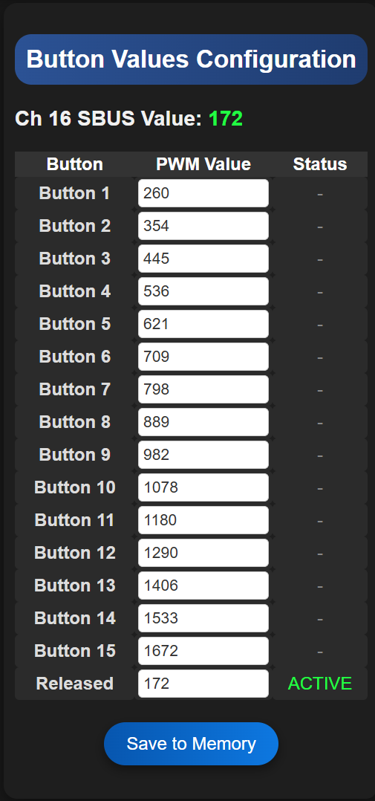
-
Channel Values
- Display selected RC hannel
- Monitor SBUS values for each channel
- Values shown in real-time
-
Button Assignment
- Set specific PWM values per button
- Ensure unique values for each function
- Test each button after configuration
-
Released State
- Set neutral position values
- Ensures proper calibration
- Prevents unwanted activation
Setup Process
- Start by setting Released State
- Push each buttons one by one and record the value
- Save to Memory
RC Channels Pass Through Configuration¶
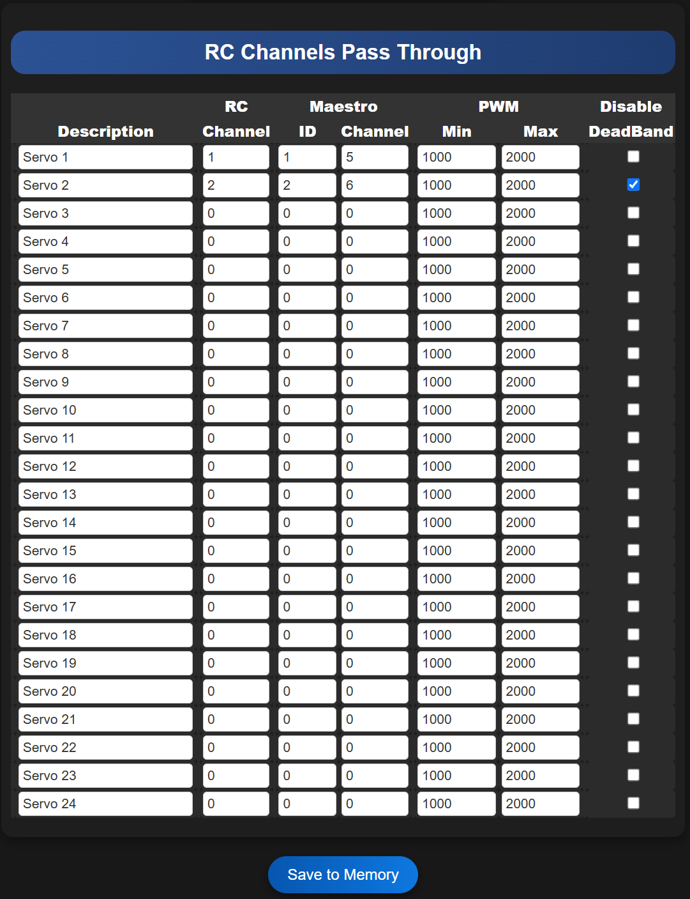
Overview¶
The Pass Through feature enables direct mapping between RC channels and Maestro servo outputs, providing precise control over multiple servos.
Configuration Options¶
-
Basic Setup
-
Description
- Enter a descriptive name for each passthrough
- Helps identify specific controls
- Recommended for complex setups
-
RC Channel
- Select input RC channel
- Requires prior remote mixing setup
- Maps to specific servo output
-
-
Maestro Settings
-
Maestro ID
- Choose target Maestro (1 or 2)
- Identifies specific controller
-
Channel Selection
- Select output channel (0-23)
- Maps to physical servo port
-
-
Motion Control
-
PWM Limits
- Set minimum/maximum PWM values
- Defines servo movement range
- Customizable per channel
-
Deadband Control
- Option to disable servo deadband
- Enables direct servo control
- Affects script compatibility
-
Advanced Usage Tips
-
Channel Flexibility
- Single RC channel can control multiple servos
- Useful for synchronized movements
- Reduces transmitter channel usage
-
Direction Control
- Invert MIN/MAX PWM to reverse servo direction
- No physical rewiring required
- Maintains calibration settings
-
Maestro Integration
- Match PWM limits with Maestro Control Center settings
- Ensures consistent behavior
- Prevents mechanical binding
Deadband Considerations
- Disabling deadband:
- Provides more precise control
- May affect script functionality
- Consider carefully for automated sequences
Configuration Example
- Servo #1:
- Connected to: Maestro #1, Port 5
- Controlled by: RC Channel #1
- Standard configuration
- Servo #2:
- Connected to: Maestro #2, Port 6
- Controlled by: RC Channel #2
- Deadband: Disabled
- Note: Cannot be controlled by scripts
Button Configuration¶
The Button Configuration page is the heart of the Kyber Controller, where you assign specific functions and behaviors to each button.

PAD Selection and Basic Setup¶
PAD Access¶
- Choose between PAD 1-3 (based on configuration)
- Each PAD provides independent button settings
- Customize functions per PAD
Button Properties¶
-
Name
- Assign descriptive names to buttons
- Helps track button functions
- Supports clear documentation
-
Sound Configuration
-
MIN/MAX Sound
- Set sound range for button
-
Sound Timing
- Adjust playback delay
- Synchronize with actions
- Fine-tune timing
-
Random Playback
- Uses MIN/MAX range
- Prevents repetition
-
-
Motion Control
-
Primary Script
- Set main Maestro script
- Define initial action
-
Secondary Script
- Set follow-up script
- Create action sequences
-
Script Timing
- Add execution delay
- Sync with sound effects
-
-
Advanced Features
-
Serial Commands
- Send custom commands
- Must end with "\r"
- Direct external device control
-
Emergency Stop
- Available on all PADs
- Immediate action/sound stop
- Optional serial command
-
Sound Configuration Tips
-
Single Sound Mode
- Set identical MIN/MAX values
- Ensures consistent playback
- Perfect for specific effects
-
Timing Optimization
- Use delays for synchronization
- Match sound with motion
-
Random Sound Tips
- Enable for dynamic behavior
- Set appropriate range
- Avoid repetitive sounds
Script Management Tips
-
Sequence Control
- Scripts play in order
- Use same value for identical playback
- Plan script numbers in Maestro carefully
-
Timing Control
- Delays help synchronization
- Adjust for smooth operation
Configuration Examples
-
Example 1: Door Control
- Button 1 Configuration:
- Sound: #1 (plays every press)
- Script 1: Door open sequence
- Script 2: Door close sequence
- Result: Alternates between open/close
- Button 1 Configuration:
-
Example 2: Random Sounds
- Button 2 Configuration:
- Sound MIN: 5
- Sound MAX: 10
- Random: Enabled
- Result: Non-repeating random sounds
- Button 2 Configuration:
-
Example 3: Synchronized Action
- Button 3 Configuration:
- Name: "The Wave" sequence
- Sound: #2 with delay (help sync sound and movement)
- Serial Command: Play "The Wave" on Marcduino
- Result: Synchronized motion/sound on external device
- Button 3 Configuration:
Random Events System¶
The Random Events system allows you to create automated, randomized behaviors for your Kyber Controller.
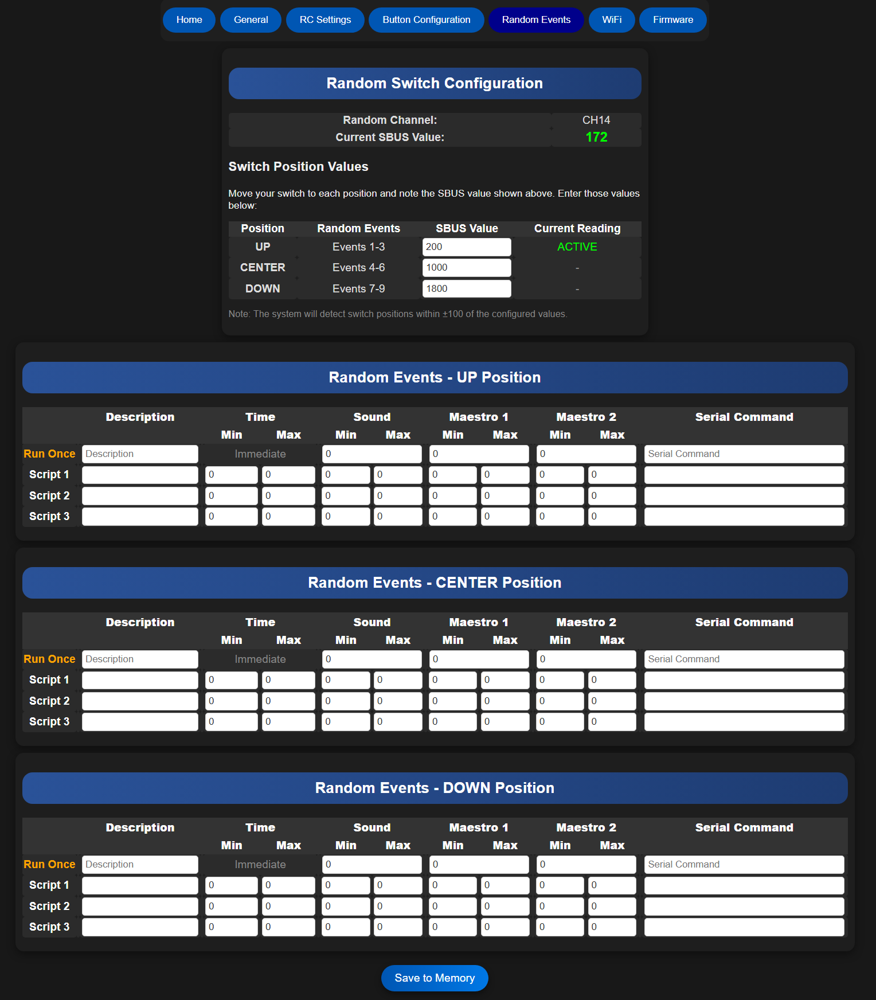
Switch Configuration¶
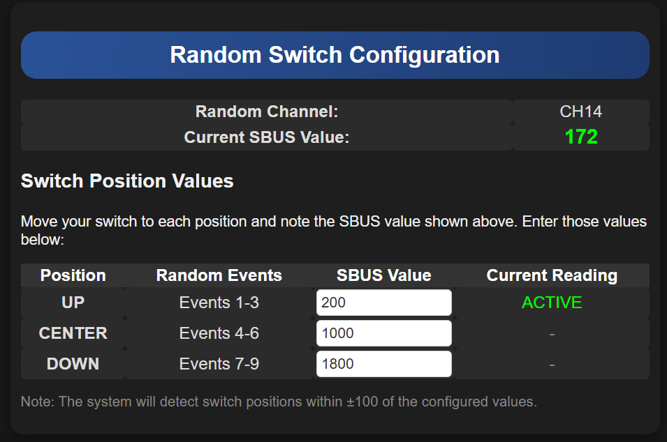
-
Current Value Display
- Shows live SBUS values
- Updates with switch movement
- Used for calibration
-
Position Settings
- UP: Configure upper switch position
- CENTER: Set middle switch position
- DOWN: Set lower switch position
Event Configuration¶
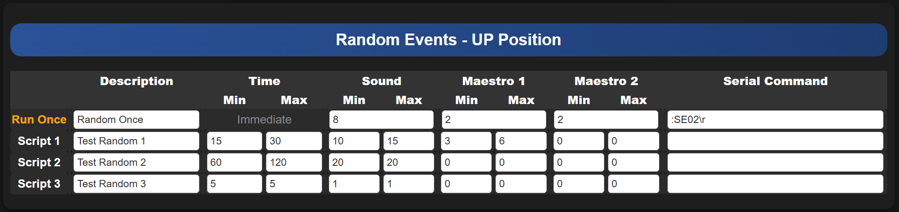
Common Settings¶
Each position (UP/CENTER/DOWN) shares these configuration options:
-
Basic Setup
-
Run Once Mode
- Single execution per trigger
- Ideal for initialization events
- Resets with position change
-
Event Description
- Name/describe the event
- Track different configurations
- Document behavior
-
-
Timing Control
-
Minimum Time
- Shortest interval (seconds)
- Sets lower timing bound
-
Maximum Time
- Longest interval (seconds)
- Sets upper timing bound
-
-
Action Configuration
-
Sound Range
- MIN: Lowest sound number
- MAX: Highest sound number
- Creates variety in audio
-
Script Range
- MIN: First script number
- MAX: Last script number
- Enables varied movements
-
Serial Commands
- Custom command strings
- Must end with "\r"
- Direct device control
-
Configuration Tips
-
Random Behavior
- Set different MIN/MAX values
- Creates unpredictable patterns
- Adds life-like variation
-
Timing Strategy
- Consider overall system timing
- Avoid overlapping events
- Plan for smooth operation
Configuration Examples
- Example 1: Random Ambient Behavior
Configuration: - Time: 15-30 seconds - Sounds: 10-15 (random) - Scripts: 3-6 (random) Result: Regular, varied ambient activity
**Example 2: Periodic Announcement**
**Example 3: Quick Response**
Performance Note
- Monitor system resources with frequent events
- Test timing combinations thoroughly
- Avoid overwhelming the system
RC Buttons¶
WiFi Configuration¶
Configure your Kyber's wireless connectivity for local or network access.
 WiFi configuration interface
WiFi configuration interface
Connection Modes¶
1. Access Point (AP) Mode¶
Direct connection to the Kyber's built-in WiFi network.
- Default Configuration
- SSID:
KYBER_xxxx(xxxx = last 4 MAC address digits) - Password:
12345678 - IP Address:
192.168.4.1
- SSID:
2. Station Mode¶
Connect the Kyber to your existing WiFi network.
- Required Information
- Your network's SSID
- Network password
- DHCP-assigned IP address
Connection Guide¶
AP Mode Setup¶
-
Device Connection
- Connect to
KYBER_xxxxnetwork - Use default password
- Wait for connection
- Connect to
-
Interface Access
- Open web browser
- Navigate to
http://192.168.4.1 - Interface loads automatically
Station Mode Setup¶
-
Network Connection
- Enter your network details
- Save configuration
- Wait for connection
-
Finding IP Address
Method: 1. Connect USB cable 2. Open serial console (115200 bps) 3. Press reset button 4. Note displayed IP address -
Accessing Interface
- Open web browser
- Enter noted IP address
- Interface loads automatically
Security Recommendations¶
Critical Security Steps
-
Initial Setup
- Change default password immediately
- Consider changing default SSID
- Document new credentials safely
-
Usage Guidelines
- Disable WiFi when not in use
- Use WiFi switch for physical control
- Regular password updates recommended
Safety Features
- Auto-fallback to AP Mode if network unavailable
- Password recovery via reset button
- Connection status indicators
Troubleshooting Guide
-
Network Not Found
- Check WiFi switch/jumper
- Verify power to WiFi module
- Confirm correct SSID
-
Connection Issues
- Verify credentials
- Check signal strength
- Confirm router settings
-
Password Reset
Recovery Process: 1. Press reset button twice 2. Hold 5-6 seconds each press 3. SSID resets to KYBER_xxxx 4. Password resets to 12345678
Network Selection Tips
- Use 2.4GHz networks for better range
- Avoid crowded networks
- Consider dedicated network for reliable connection
System Management¶
Firmware Management¶
 Firmware update and management interface
Firmware update and management interface
Core Features¶
-
System Updates
- Check current version
- Download and install updates
- View update history
- Verify installation status
-
Version Control
- Track firmware versions
- Review change logs
- Manage rollbacks
- Monitor system stability
-
System Recovery
- Backup current settings
- Restore previous versions
- Emergency recovery options
- Configuration management
Remote Access Configuration¶
Local Network Access¶
-
Basic Setup
- Connect to local network
- Use assigned IP address
- Default port configuration
- Local security settings
-
Network Integration
- DHCP configuration
- Static IP assignment
- Network discovery
- Local DNS settings
Remote Access Setup¶
Security Configuration
Before enabling remote access, implement these security measures:
-
Network Security
- Configure firewall rules
- Set up VPN access
- Enable encryption
- Update passwords
-
Port Forwarding
Configuration: - Forward port 8080 (or custom) - Protocol: TCP - Internal IP: Kyber's IP - External IP: Router's public IP -
Access Method
Connection String: http://your-external-ip:8080
Mobile Interface¶
Optimization for Mobile Devices¶
-
Interface Adaptation
- Responsive design
- Touch-friendly controls
- Simplified navigation
- Optimized layouts
-
Mobile Features
- Quick access buttons
- Gesture controls
- Status indicators
- Performance optimization
Mobile-Specific Tips¶
Mobile Usage Guidelines
-
Interface Navigation
- Use landscape orientation
- Enable touch gestures
- Utilize quick actions
- Access essential controls
-
Performance
- Clear browser cache
- Use recommended browser
- Monitor data usage
- Optimize connection
-
Troubleshooting
- Check network stability
- Verify browser compatibility
- Clear application data
- Update system software
System Security¶
Critical Security Measures
-
Access Control
- Use strong passwords
- Enable authentication
- Implement role-based access
- Regular security audits
-
Network Protection
- Configure firewalls
- Use secure protocols
- Monitor access logs
- Update security settings
-
Maintenance
- Regular updates
- Security patches
- System backups
- Performance monitoring
Support Resources
- Documentation updates
- Community forums
- Technical support
- Training materials
Custom Title
This is a note admonition. The title is optional.
Abstract
Also known as "summary" or "tldr"
Info
Additional information
Tip
Also known as "hint" or "important"
Success
Also known as "check" or "done"
Question
Also known as "help" or "faq"
Warning
Also known as "caution" or "attention"
Failure
Also known as "fail" or "missing"
Danger
Also known as "error"
Bug
Report a bug
Example
An example
Quote
Also known as "cite"